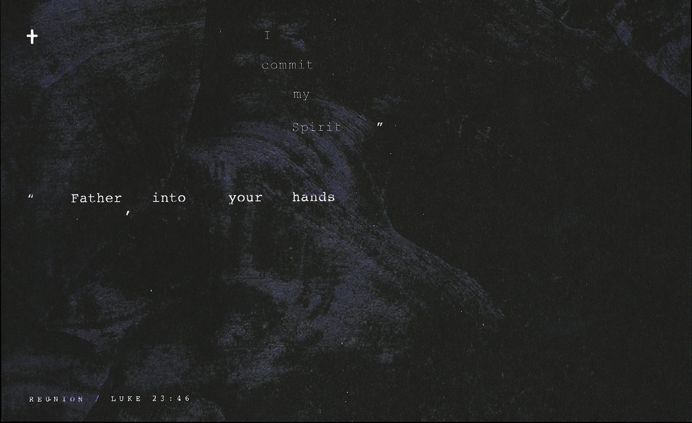
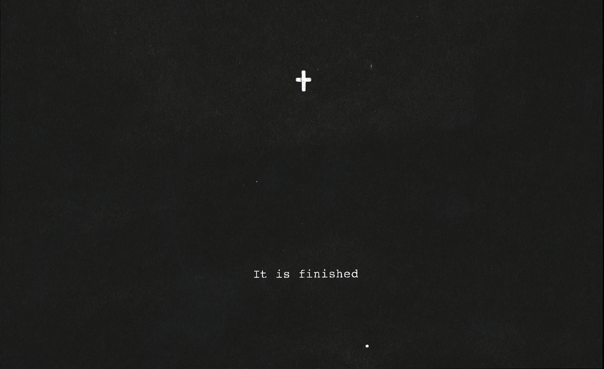
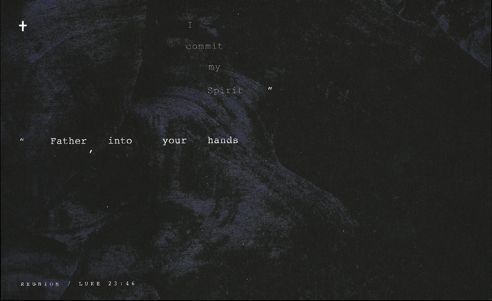
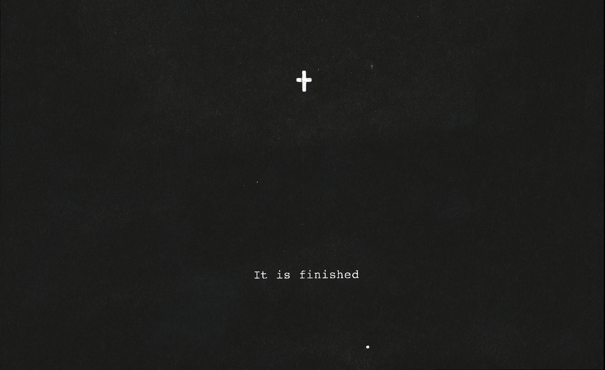
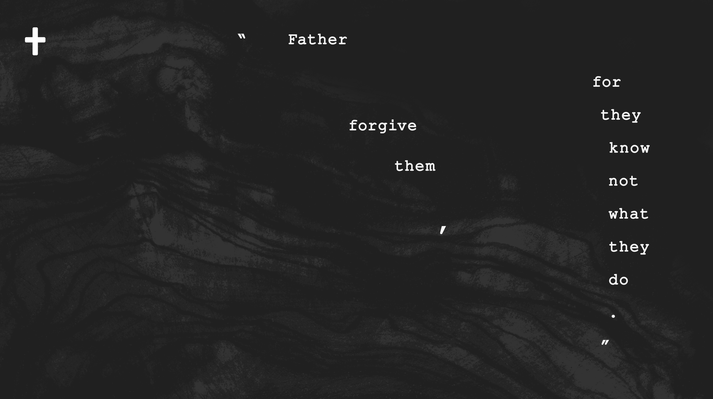

Words from the Cross
Entering the Lenten season of 2019 Church of the City examined the seven
last phrases spoken by Jesus during his crucifixion. Each phrase was
typeset in a concrete poetry style, descending from a cross towards a
figurative "Golgoltha" below.
 



《 Intent and Inspiration 》
Since this series was so focused on words, I thought it most appropriate
to focus any visualization on them. Each of these passages are repeated
every Good Friday and thus familiar to most Christians. With all the
ceremony, candles and acoustic music, it's easy for them to fade into
the average buzz of ritual and religion—yet they originated at great
cost, during the darkest point of Jesus' life on earth. What did they
sound like? How were they spoken? How did it feel?

「 Inspiration 1: Calligrammes 」
While paging through Idea magazine a few weeks before I'd discovered a
set of concrete poems by French Writer Guillaume Appolinnaire. He made
them after surviving World War I and a shrapnel wound to his temple,
while in recovery.
The placement of leters in each poem create images—forming curls and
fountains. Each letter looks carefully hand-placed, as an extension of
the poetic form. My favorite of these series was Il pleut, where
the letters form glittering raindrop, falling from the poem's title
(strong inspiration for week 4's "I thirst").
「 Inspiration 2: Concrete Poetry 」
Beyond Appolinnaire, I discovered that many forms of concrete poetry
have religious roots. Traditional Shiviti, plaques placed before
cantor of a synagogue, functioned as textual and graphic centers for
meditation on the name of God, often featuring a lampstand-formed
version of Psalm 67. In the Christian tradtiion one of the early
examples of English concrete poetry is George Herbert's
Easter Wings, which meditates on the atonement of Christ in a
poem set sideways in a wing-like form.
「 Inspiration 3: John Warwicker 」
A more contemporary inspiration is designer John Warwicker's book
Ukiyo-e:The Floating World. With a delicate hand, Warwicker uses
various sizes, compositions, and glyphs of Caslon to create a sublimely
visual work of poetry. A TA I'd met at RISD called this book "everything
you need to learn about layouts and composition."
「 Inspiration 4: Kinetic Typography 」
A final reference was certain kinds of kinetic typography. I'd been
listening to some of XXXtentacion's music after his passing, and really
enjoyed some of the grungy aspects of his lyric video with Lil Pump /
Maluma & Swae Lee on "Arms Around You"

《 Final Approach + Components 》
The final visual design attempts to capture each final word in a raw,
living state. Every phrase is shown in type only, following a careful
descent to earth from the cross. Words are kept relatively small and
placed on textured backgrounds. Perhaps eyes straining ot read the words
could mimic ears straining ot hear Jesus amidst the dark clamor of
crucifixion.
01. Courier (Words)
As mentioned, words were intended as
the hero of this series. I chose Courier for its simple practicality,
and for its ability to focus attention on the expression of words over
replicable perfection (this is hwy monospace is favored by writers.).
Punctuation was exaggerated to emphasize the spoken nature of each
phrase.

02. The Cross (icon)
I generally try to avoid using
crosses in a church design context, since they are so overused… but in
this case, I thought it amde sense to give the words an origin point. I
kept it small and stylized to make it a sort of punctuation glyph,
undistracting from the text. I introduced a slight imperfection to its
symmetry to acknowledge its organic imperfection.

03. Golgotha (background)
The texture is meant to provide
context for the words suggest a landscape reminiscent of Golgotha—the
place Jesus was crucified (also called Calvary in more English
traditions). Each "landscape" is created based off photos of olivewood,
cypress, and pine planks—woods some Christians believe formed the One
True Cross.
《 PROCESS AND DELVIERABLES 》
As a sermon series, I was responsible for a variety of supporting assets
including
☞ Cover slides for each week
☞ Corresponding
social media assets,
☞ Presentation template for sermon
slides
☞ Weekly bulletins/handouts.
Bulletins were riso-printed at SVA's risolab in editions of
700. Having just come off the This Must Be Stronger Than That series, I
wanted to avoid some of the weekly production sprints and thus designed,
printed, and cut the series in two larger batches.
「 Special Services 」
Since this was a Lenten series, it officially started with an Ash
Wednesday service and ended on Easter Sunday. To keep the experience
continuous, I designed two extra cover slides with the same visual
inspiration.
The Easter Sunday handout came with a stronger call to action on the
back, intended as both an invite and follow-up piece.

《 CLOSING THOUGHTS 》
The last series I'd designed before this was full of color, testing the
limits of what could be called a visual system and taking full advantage
of Risograph printing's vibrancy. This series stood in stark
contrast—intensely dark and yet still using the tactility of riso
printing to great effect.
If I'm really honest, there was a small part of me that was terrified
coming out of the last series. I felt like I had exercised every
capability of design I had left—would I have any ideas left? The final
process and execution of this series was a small miracle.
John Warwicker's book was one of my first "Holy Grail" design books, and
inspired my first book design at RISD. It felt good to come back to this
poetic style of typesetting with a few years of extra maturity and
restraint.
All told, I still feel like this was a strong idea. The blend of white
words on a dark landscape felt appropriate—final glitters of light that
emerged in the cosmological darkness. It felt restrained enough to be
clear, but sophisticated. I still feel like they might look even cooler
animated.